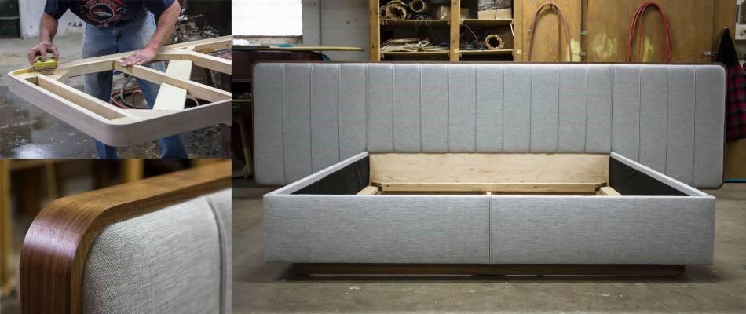
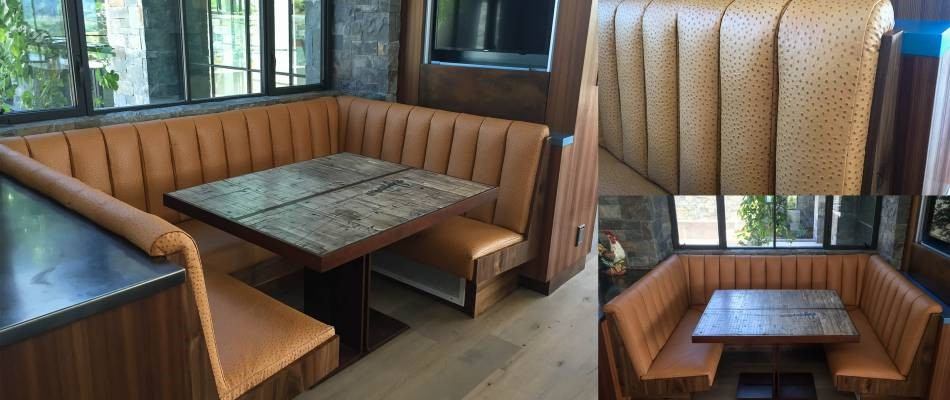
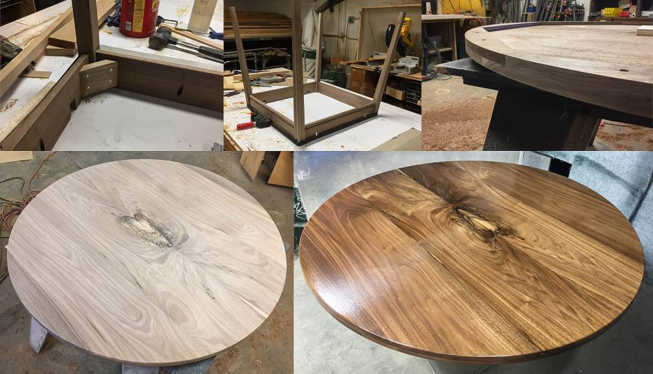
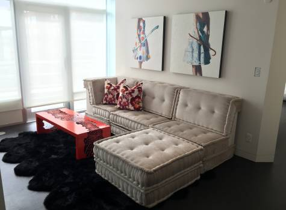
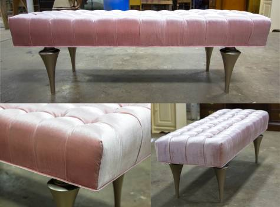
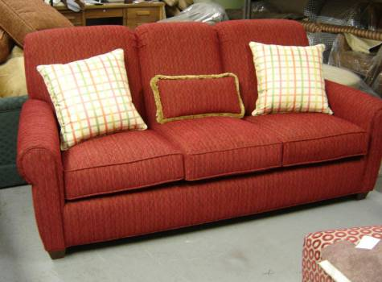
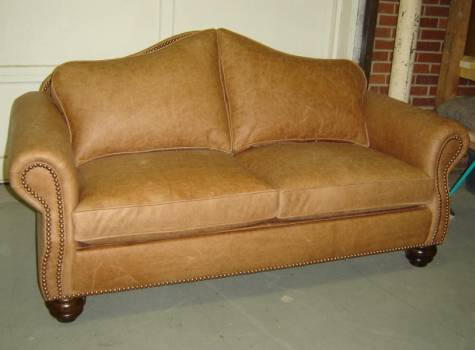

Custom Furniture


Can't find the exact piece of furniture you're looking for? In an age where most modern furniture is mass produced it can be difficult to find quality furniture pieces that match the aesthetics of your home. Ablyss is proud to offer its custom furniture services in as an alternative to run-of-the-mill warehouse items. Our custom furniture is crafted to endure daily life on a long term basis, creating truly unique pieces that last for generations.
Why Consider Custom Furniture?
Prior to the 20th century, most furniture was handcrafted specifically for a particular room, home or purpose. These specialty pieces said a lot about their owner - their design interests, social standing and daily life - custom furniture pieces were a unique part of the home made with quality materials. While custom-built furniture became less popular as inexpensive and mass-produced chairs, dining sets and other items flourished, they remained useful pieces that withstood the test of time, passed between family members as heirlooms.

Fortunately, modern handcrafted furniture isn't a luxury reserved only for kings and queens. Ablyss is proud to have offered its custom furniture pieces for more than 6 decades. Our senior master craftsman is the fourth generation within the Ablyss family to build beautiful furniture items using trusted techniques and high-quality material. Each custom furniture piece is built with longevity and art in mind, creating a final product you'll be glad to display for years to come.Instead of searching endlessly for a particular style or settling for a lower-quality piece, let Ablyss provide you with a custom piece that is truly worth the cost. You'll save time and money by getting the exact piece you're looking for without the letdowns of poor workmanship or low quality.


Quality Custom Furniture
What sets Ablyss apart is its ability to create custom specialty furniture made to your exact specifications with quality materials. Our all-hardwood frames are hand-built and assembled in-house, allowing us to provide high-quality work that will look beautiful in your home and last long enough to be considered an heirloom item.
We have extensive experience in many projects, including:
Custom bed frames
Headboards
Sofas
Chairs
Sectionals
Ottomans
Tables
And more
Ablyss offers a wide array of high-quality upholstery fabrics to complete the look of your new piece with modern or traditional flair. Our fabric selection allows you to blend the new piece with current modern furniture in your home or easily blend in with traditional, vintage furniture.


Learn More About Our Custom Furniture Services
Interested in learning more about our custom furniture services? Contact us today on 303.935.0949 for more information on how we can help you design the furniture of your dreams.